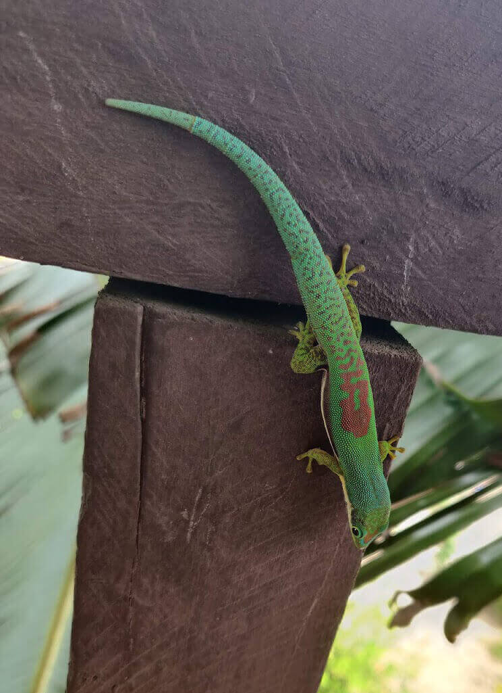
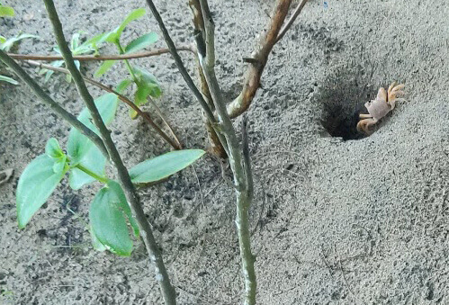

Wildlife!
Coming back to the wilds of Africa brings back all these memories of encounters with wild animals, bugs, and everything inbetween. Madagascar is no exception. Madagascar, it seems, is also not for wussies.
Frogs as flatmates
The first day I arrived in Mahanoro, this curious being was hanging out in the bathroom of the bungalow. I've seen a few around since then, but none are as remarkable so far as Boophis Brachychir.
When it rains (which it has for the last three days), you can hear little chirps from the fountain-shaped palms and succulents here. Those chirps are coming from tiny little adult frogs, trying to attract mates!
One was even brave enough to park out on my hand!
The shapes and colours of frogs here are amazingly diverse. Take a gander through this list of frogs of Madagascar
Lizards and Geckos, nature's bug hunters
The startling colours of the Day Geckos make them easy to spot during the day, while other gecko species are asleep.
At night, there are bound to be a few geckos hanging around the house, opportunistically trying to catch insects attracted to the lights. These geckos have wonderful spectacled camouflage, but have proven difficult to photograph.
Before my year is up, I'd love to be able to see a Spearpoint Leaf-tailed Gecko…
Birbs
One of the first birds you might notice after landing in Tana, is the Red Fody. It behaves and sings like a canary.
One of the local sunbird visitors to the school, is the Malagasy Green Sunbird, or Long-billed Sunbird.
I was also lucky to see two owls (who the locals say are bad omens, envoys of a witch) in the dusk, their eyes reflecting orange in my headlamp's light.
Besides those, bird-life has been pretty boring (Mynah birds, pigeons, the usual), most likely because we're in town. I'm looking forward to heading out of town to see what can be seen.
Invertebrat(e)s
I'm not a fan of most Invertebrates, but managed to capture some of them with the camera. This spider momma is trying to find a new spot for her nursery.
And Humphrey here, is my downstairs neighbour. He's rather anti-social though.

Yesterday night, I had a chance encounter with one of the more detested ones, one the locals say should meet the flat end of a shoe as soon as possible.
I was reading in bed, when I felt a scratching sensation on my left shoulder. I shot out of bed like a rocket, switched on my torch, to see a centipede the size of my palm innocently parking off on my pillow.
Apparently I was pretty lucky that I didn't get bitten, as their bite can be quite itchy and painful.
I managed to catch the blighter, and brought it to school the next day, because we have a baby that needs feeding. I'll give you the details in a later post.